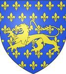
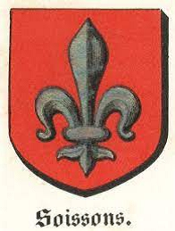

769132335 Adela de Vexin of Valois
* omkring 1036 Valois, France
† 1080 Vermandois, France
Blev ca 44 år
* omkring 1036 Valois, France
† 1080 Vermandois, France
Blev ca 44 år
1538264670 Count Ralph IV de Valois
* omkring 1024
† 1074-02-23 Peronne, France
Greve av 7 st Grevskap, se notering!
Blev ca 50 år
* omkring 1024
† 1074-02-23 Peronne, France
Greve av 7 st Grevskap, se notering!
Blev ca 50 år
3076529340 Count Ralph III de Valois
* omkring 1010 Vexin, Normandie, Frankrike
† 1038 Peronne, France
Greve av Valois
Blev ca 28 år
* omkring 1010 Vexin, Normandie, Frankrike
† 1038 Peronne, France
Greve av Valois
Blev ca 28 år
6153058680 Count Walter II de Valois
* omkring 955
† mellan 1017 och 1024
Greve av Valois & Vexin & Amiens
Blev ca 68 år
* omkring 955
† mellan 1017 och 1024
Greve av Valois & Vexin & Amiens
Blev ca 68 år
3076529341 Countess Alix de Breteuil
Grevinna av Nanteuil-le-Haudouin
Grevinna av Nanteuil-le-Haudouin

1538264671 Countess Adele de Bar-sur-Aube
* 1012 Vexin, Normandie, Frankrike
† 1053 Valois, France
Grevinna av Bar-sur-Aube & Vitry-en-Perthois
Blev högst 41 år
* 1012 Vexin, Normandie, Frankrike
† 1053 Valois, France
Grevinna av Bar-sur-Aube & Vitry-en-Perthois
Blev högst 41 år

3076529342 Count Nocher III de Bar-sur-Aube
* 992 Champagne, Picardie, Frankrike
† 1040 Bar-sur-Aube, France
Greve av Bar-sur-Aube
Blev högst 48 år
* 992 Champagne, Picardie, Frankrike
† 1040 Bar-sur-Aube, France
Greve av Bar-sur-Aube
Blev högst 48 år

3076529343 Adelais de Soissons
* 1000-05-09 Soissons, Aisne, Picardie, France
† omkring 1042 France
Blev ca 42 år
* 1000-05-09 Soissons, Aisne, Picardie, France
† omkring 1042 France
Blev ca 42 år
6153058686 Gilbert de Soissons